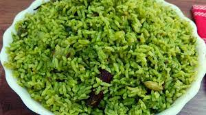
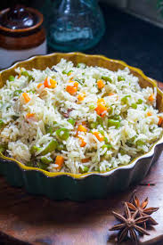

Palak Rice

Ingredients:
- Fresh spinach (palak), washed and chopped
- Basmati rice, rinsed and drained
- Onion, finely chopped
- Tomato, chopped
- Ginger-garlic paste
- Green chilies
- Garam masala powder
- Salt to taste
- Oil or ghee for cooking
- Spices (cumin, coriander, chili powder)
Instructions:
- Blanch spinach, blend to make puree.
- Sauté whole spices, onions, ginger-garlic paste, and tomatoes.
- Add spinach puree, turmeric, garam masala, and salt.
- Mix in rinsed rice and water (1:2 ratio).
- Cook covered until rice is tender (15-20 mins).
- Garnish with fresh cream and serve hot.
Ghee Rice

Ingredients:
- Basmati rice, rinsed and drained
- Ghee (clarified butter)
- Onions
- Cashew nuts or almonds
- Raisins
- Salt to taste
- Spices (cumin, coriander, chili powder, garam masala)
Instructions:
Rinse basmati rice until the water runs clear, then soak for 20-30 minutes, if possible.In a pot, heat ghee over medium heat.
Add whole spices (cinnamon stick, cloves, cardamom pods, and bay leaves) and sauté until fragrant.
Add thinly sliced onions and sauté until golden brown.
Drain the soaked rice and add it to the pot. Stir gently to coat the rice with ghee and spices.
Add water or vegetable broth (usually in a 1:2 ratio of rice to water) and salt to taste.
Bring the mixture to a boil, then reduce the heat to low, cover the pot, and let the rice cook until tender and the water is absorbed, about 15-20 minutes.
While the rice is cooking, you can optionally fry cashew nuts or almonds in ghee until golden and plump, and fry raisins until they puff up.
Once the rice is cooked, fluff it gently with a fork and remove from heat.
Garnish the ghee rice with the fried nuts and raisins, if using, before serving.
Veg Fried Rice

Ingredients:
- Cooked rice
- Assorted vegetables
- Onions
- Garlic
- Ginger
- Soy sauce
- Vegetable oil
- Salt and pepper to taste
- Spices (cumin, coriander, garam masala)
Instructions:
Heat vegetable oil in a large skillet or wok over medium-high heat.
Add chopped onions and sauté until translucent.
Add minced garlic and ginger, and cook until fragrant.
Add chopped vegetables and stir-fry until they are tender-crisp.
Push the vegetables to the side of the pan and add the cooked rice to the center.
Pour soy sauce and sesame oil over the rice and toss everything together until well combined.
If using, push the rice and vegetables to one side of the pan and scramble eggs on the empty side.
Once the eggs are cooked, mix them into the rice and vegetable mixture.
Season with salt and pepper to taste.
Optional: Garnish with chopped green onions before serving.